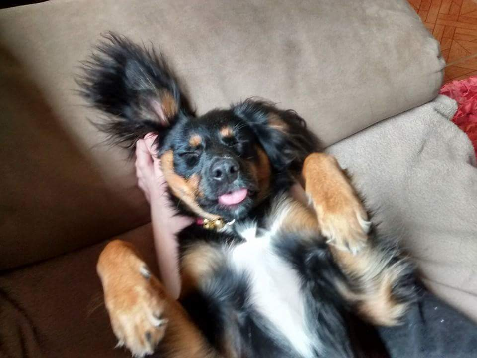
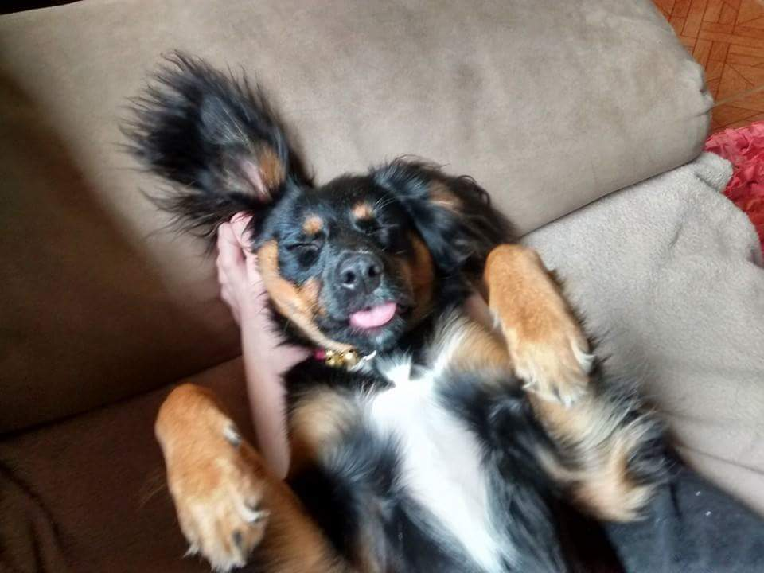

Exercícios
Após o fechamento da segunda semana na Trybe, as pessoas que eu mais tive contato são:
- Gabriel Max - Sempre que tive dúvidas me ajudou.
- Thiago Ferreira - Tentei ajudar algumas vezes quando teve dúvida.
- Alana Reis - Tivemos algumas dinâmicas juntos.
 
